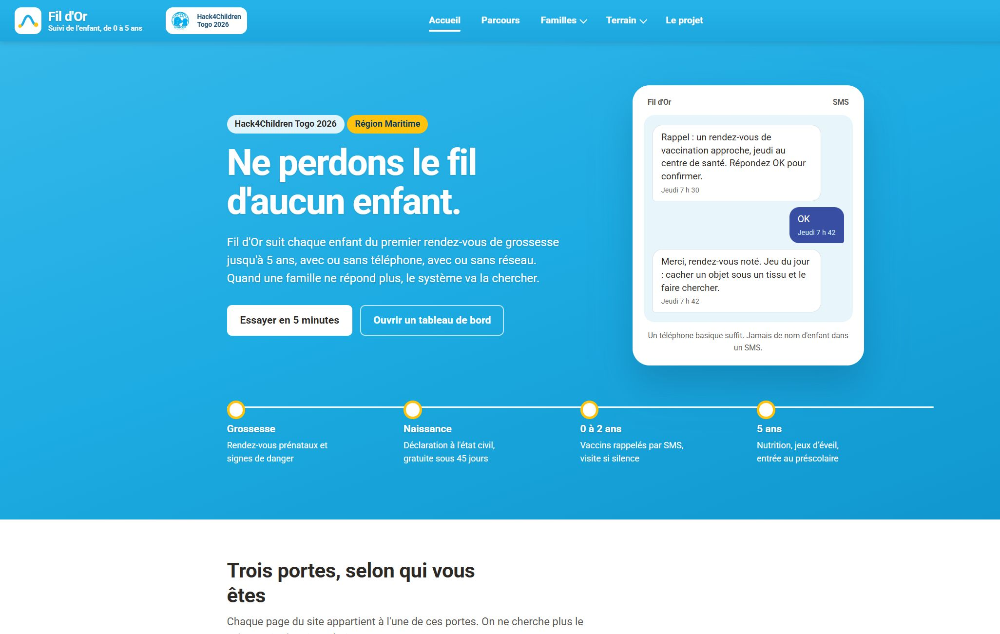
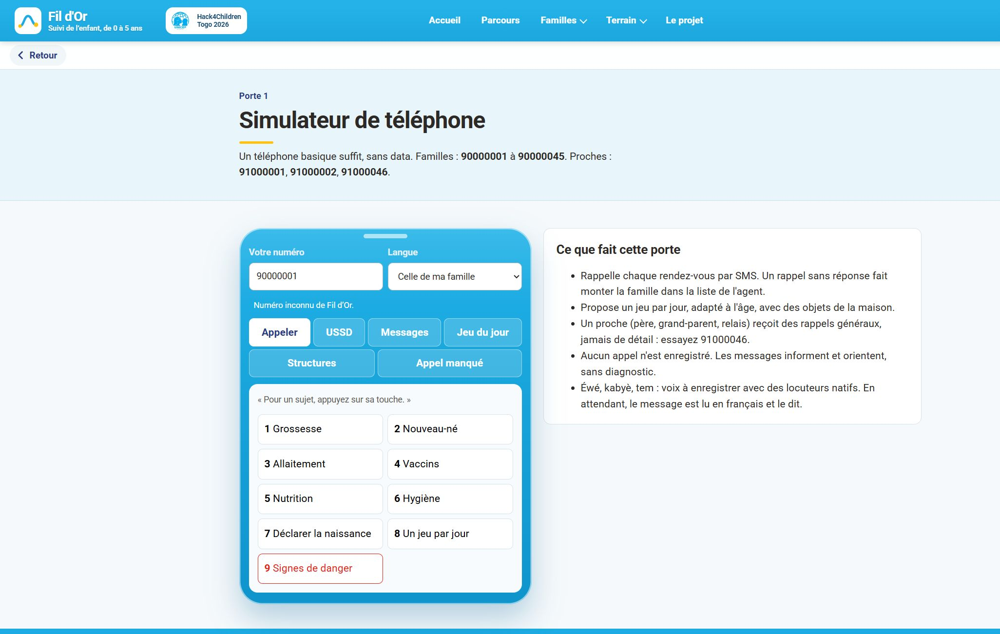
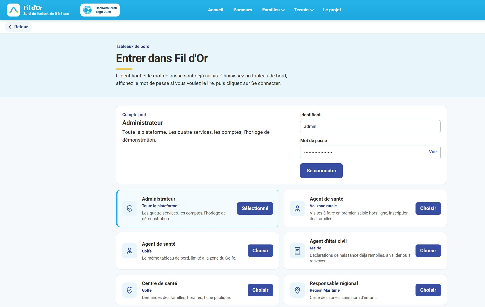
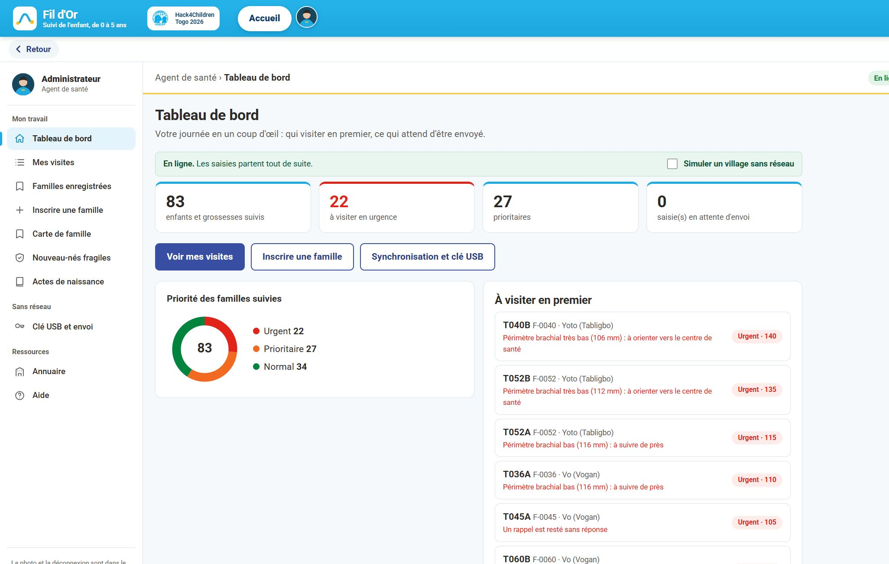
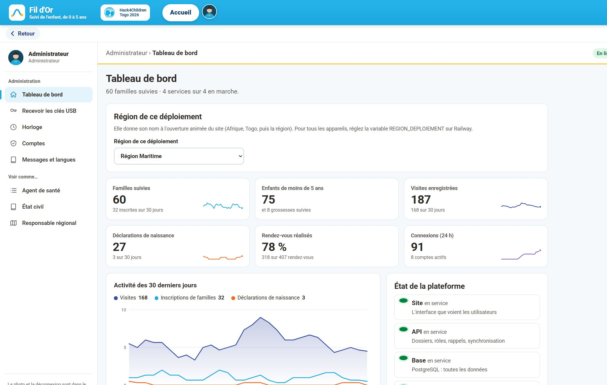

Hack4Children Togo 2026 · UNICEF · prototype
Ne perdons le fil d'aucun enfant. De la grossesse à 5 ans, avec ou sans téléphone, avec ou sans réseau.
Adresse de la démonstration. https://frontend-production-5667500e.up.railway.app/
L'identifiant est déjà saisi selon le rôle. Mot de passe : FilDor2026!demo. Comptes : admin, agent.vo, mairie, structure.golfe, decideur.
Un seul carnet suit l'enfant. Quand une famille ne répond plus à un rappel, elle remonte dans la liste de l'agent de santé. Le système va chercher l'enfant, au lieu d'attendre qu'il revienne.
Données fictives. Aucun nom, aucune photo d'enfant, aucun point GPS précis. Fil d'Or informe et oriente. Il ne diagnostique pas et ne prescrit pas.
| Compte | Ce que l'on montre |
|---|---|
| agent.vo | Visites triées, urgence, saisie hors ligne, déclaration de naissance. |
| mairie | Dossiers déjà remplis, validation ou rejet avec motif. |
| structure.golfe | Demandes des familles, réponse par code, sans afficher le numéro. |
| decideur | Carte des zones oubliées. Jamais un enfant. |
| admin | Vue d'ensemble, comptes, horloge de démonstration. |

Accueil. Le fil, de la grossesse à 5 ans, et l'exemple de SMS sans nom d'enfant.

Simulateur. Un téléphone basique suffit : sujets, SMS, USSD, jeu du jour.

Entrée. L'identifiant et le mot de passe du rôle choisi sont déjà saisis.

Agent de santé. 22 situations urgentes en tête, avec la raison affichée. Codes uniquement.

Administrateur. Familles suivies, déclarations, rendez-vous réalisés, services en marche.